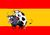

De: La Frikipedia, la enciclopedia extremadamente seria.
De: La Frikipedia, la enciclopedia extremadamente seria. De: La Frikipedia, la enciclopedia extremadamente seria.
| De la serie aquellos suicidas de baja plantilla: | |||
| Héctor Barberá | |||
| |||
| Pais: |  Aspañol | ||
| Moto nº: | 8 | ||
| Marca: | CRT | ||
| Moto: | eFeTeRre (con motor Kawasaki) | ||
| Escudería: | Avintia Blusens | ||
| Nº de accidentes provocados: | Incontables. | ||
| Nº de motos destrozadas: | las de los rivales x accidentes. | ||
| Nº de muertes que se le atribuyen: | De momento, ninguna, que se sepa. | ||
| ¿Ha ganao alguna vez algo? | 2 subcampeoatos, 10 victorias. | ||
«El año que viene tendré la Ducati oficial, jejeje»
~ Héctor tó fumao.
«Le cambio la moto a Barberá»
~ Rossi como si de cromos se tratase.
Héctor Barberá o, como se suele decir normalmente, Hestor el Barbero es un piloto español de Motogp. No tiene adjetivos, porque es de lo más mediocre que ronda por el paddock, ¡así no hay quien haga un artículo! En fin, este muchacho lleva desde 2002 en este mundillo.
Era un niño normal, de esos que nacieron en Dos Aguas, Valencia, en 1986. Era tan normal que sus padres le compraron en las ofertas del Corte Inglés. ¡¡Ayyyyy!! ¡Pero qué fallo! Los encargados lo acabaron regalando. Al final, el chico, en casa, no hacía más que ver a las motos en la Tele y al pobrecillo se le caía la baba (porque era un bebé, no por que había visto a la tía wenorra de la grada) ¡Quería ser piloto!
¡Adelante, pues con el sueño! Se embarcó, mejor dicho, se montó en la moto y comenzó a competir. Era tal su potra suerte pericia que empezó a destacar en el país entero. Ganó en el 1996, 2000, 2001 y 2002 los campeonatos juveniles. Llegó la hora, ¡¡¡¡¡a por el Mundiaaaaaaal!!!!!! ¡¡¡A la cargaaaa!!! ¡¡Yiiiiiiihaaaa!!
Pocos pudieron estrenarse tan bien en un año. Sin experiencia alguna, logró un 14º puesto en la general del 2002. ¿¿¿Quééé??? ¿Dices que puedes hacerlo mejor? Pues venga, intenta hacerlo tú, listillo, ¿eh?, eres un creído de mierda, ¿sabes?
Pero esto ya no. Tercero en 2003, 2 victorias y 5 podios, 3º en la general. Ahí te he pillao, bacalao. Fue segundo en 2004 con 4 victorias.
Fueron 5 años aburridos pero exitosos. No logró ganar el campeonato, pero en el 2009, consiguió el subcampeonato. Sumó en esos años 4 victorias. Su gran posición en 2009 le permitió subir a Motogp
Llegó el 2010, su primer año en la élite, en la órbita de los más grande, en el círculo de los mejores, ya me entiendes... Debutó con una Ducati de las Páginas Amarillas, y no es coña. Quedó 12º con 90 puntos.
El año pasado, 2011,consiguió un decimoprimer puesto con menos esfuerzo, porque sólo logró 82 puntos.
En 2012, ha fichó por Pramac Racing y esperaba superar a las Nicketo Jayden. Como no lo consiguió, le dieron la patada y su futuro en 2013 pasará por las CRT del Avintia Blusens.
| | ||
|
Autor(es):